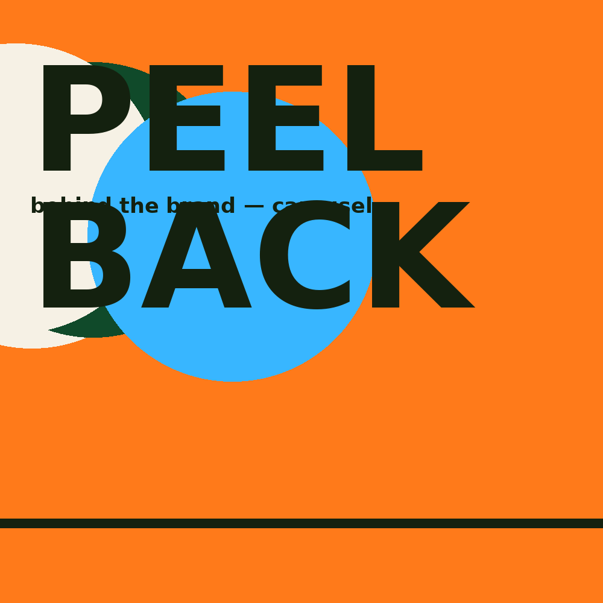
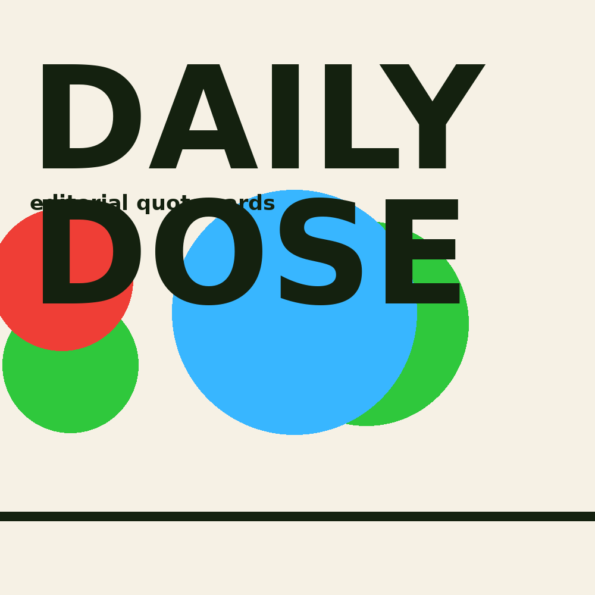
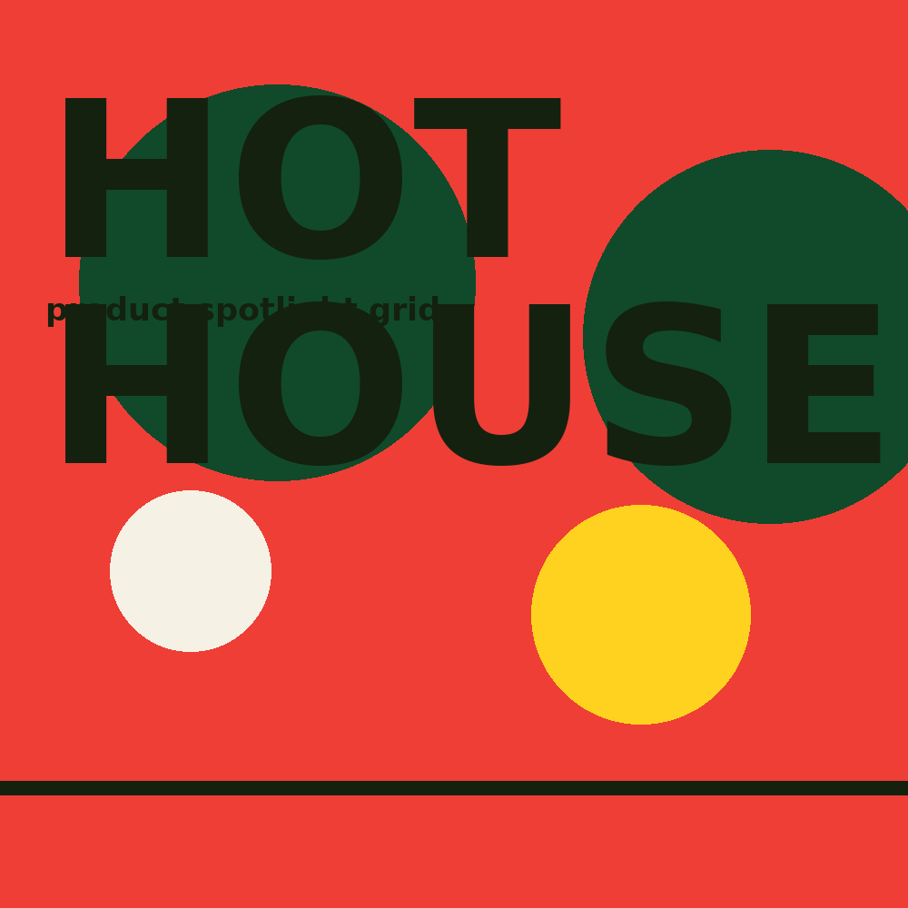
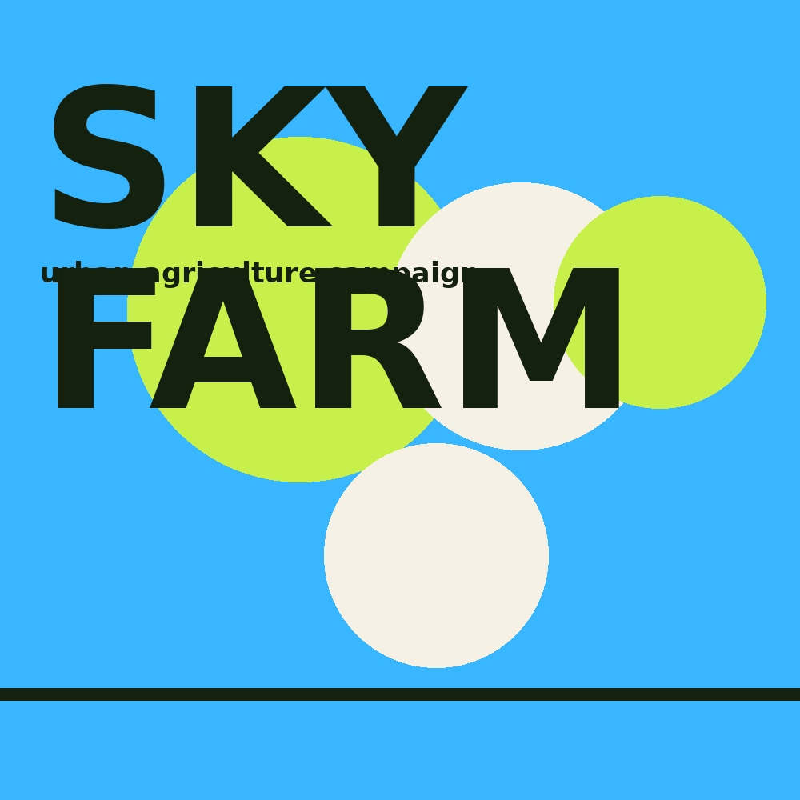

Social
Square worlds built for half-second glances. Campaigns here are systems, not single posts — grids that hold a rhythm, interrupted by one piece big enough to stop the thumb.


Built for the scroll,
designed for the stare




Objective
Turn one campaign idea into a feed that feels alive for six weeks — without redesigning the wheel every Monday morning.
System, not posts
- One hero template, three support templates
- Locked type scale, free colour rotation
- Story and reel covers from the same grid
Measured by
- Save rate over like rate
- Profile taps from single posts
- Consistency across a full month